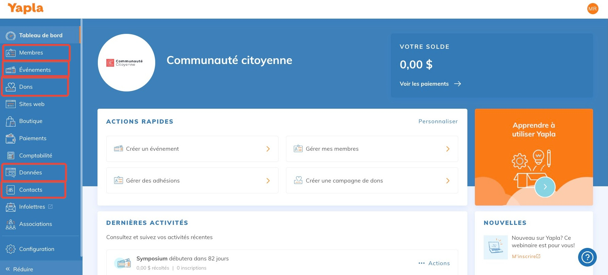
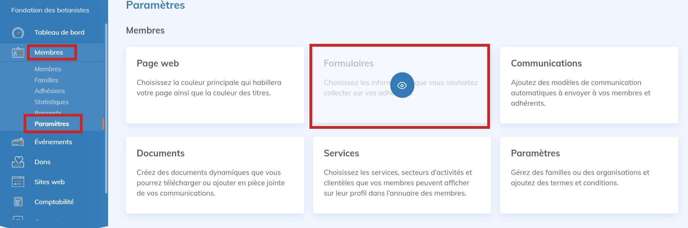
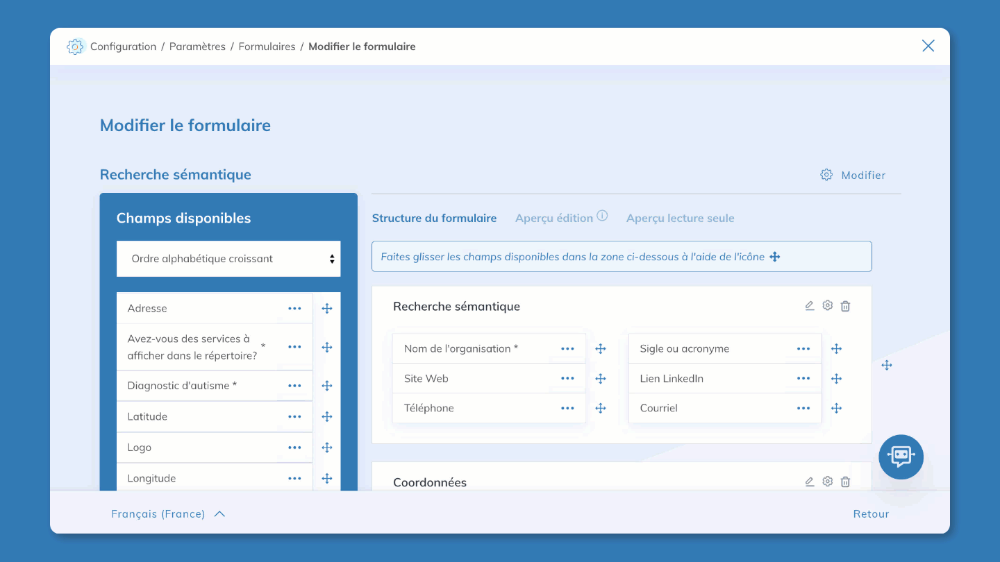
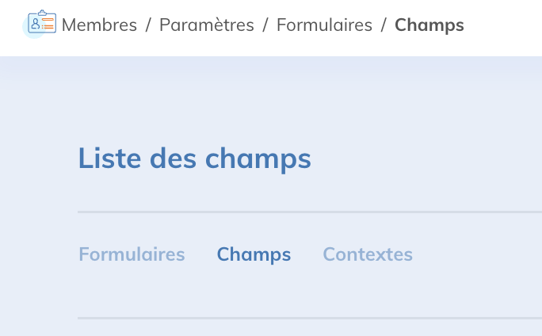
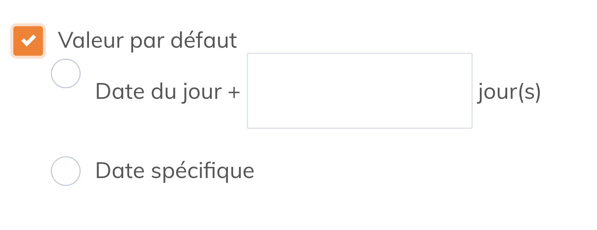
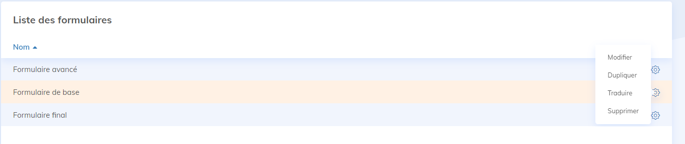
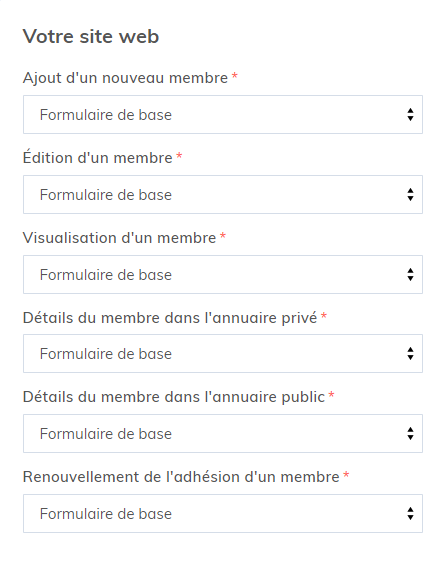
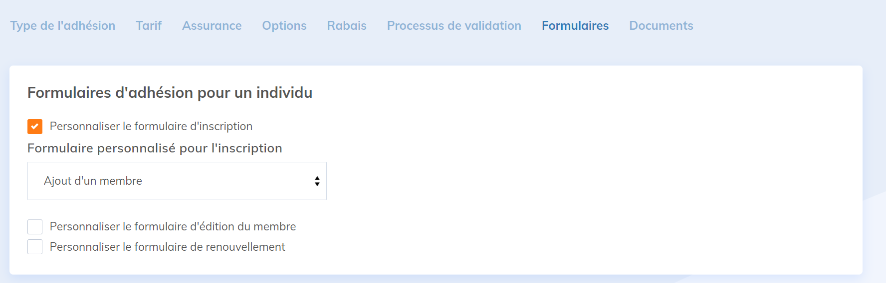

Dans Yapla, les formulaires sont des fiches utilisées pour collecter des informations sur vos membres, participants ou donateurs. Chaque fiche contient des champs que vous pouvez personnaliser selon vos besoins. Ce sont les utilisateurs (membres, participants ou donateurs) qui les remplissent. Les formulaires servent aussi à définir les informations visibles dans le compte Yapla pour les administrateurs.
Dans cet article :
- Les fonctionnalités liées aux formulaires
- Créer ou modifier un formulaire
- Personnalisation avancée des formulaires
- Les environnements et contextes
- FAQ
Les fonctionnalités liées aux formulaires
Toutes les fonctionnalités de Yapla qui collectent de l’information offrent la création de formulaires. Vous pouvez créer des formulaires pour :
- Membres : membres, organisations ou familles
- Événements : participants (et responsables), intervenants (fonctionnalité Premium)
- Activités : participants
- Sessions : participants
- Dons : donateurs, participants campagnes p2p, équipes campagne p2p
- Données : éléments d'objet
- Contacts : contacts, organisations

Où configurer les formulaires
Rendez-vous dans la fonctionnalité concernée (ex. : Membres), puis cliquez sur Paramètres > Formulaire.
Attention : Pour les campagnes d'adhésions simplifiées, rendez-vous dans Membres > Campagnes > sélectionnez votre campagne > Formulaires.
Cette page vous donne accès à la liste des champs et des formulaires. Vous pouvez les modifier ici.

Créer ou modifier un formulaire
Pour créer et modifier un formulaire, rendez-vous dans la fonctionnalité concernée. Cliquez sur Paramètres, puis sur Formulaires. Choisissez un formulaire ou cliquez sur + Ajouter un formulaire. Donnez un nom à votre formulaire. S’il est lié à un groupe, vous pouvez l’ajouter.
Attention : Pour les campagnes d'adhésions simplifiées, rendez-vous dans Membres > Campagnes > sélectionnez votre campagne > Formulaires.
Éditeur de formulaires
Ajouter un champ - sélectionnez un champ existant dans la liste des champs à gauche, puis glissez-le à l'endroit désiré dans le formulaire.
Important : voir FAQ concernant les champs Pays et Province.
Créer un champ personnalisé - cliquez sur + Créer un nouveau champ, sélectionnez le type de champs souhaité dans la liste, puis cliquez sur Suivant. Complétez la page suivante afin de paramétrer adéquatement votre champ.
- À propos du nom technique : il s'agit du nom du champ en base de données, généré automatiquement à partir du nom saisi (sans espaces ni caractères spéciaux) et modifiable uniquement à la création. Il est invisible pour les utilisateurs et sert au bon fonctionnement du compte, à la génération de mots-clés dynamiques et, dans certains cas, à la synchronisation de données entre fonctionnalités (ex. préremplir un formulaire d’inscription d'un participant ayant déjà remplis un formulaire dans le passé : les noms techniques doivent être identiques et les champs du même type. Les champs à choix multiples ne peuvent pas être synchronisés).
Rendre un champ obligatoire - lors de la création d'un champ personnalisé, cochez l’option Réponse obligatoire. Autrement, cliquez sur ... à droite du champ souhaité, puis sur Propriétés du champ. Cochez Réponse obligatoire. Pour outrepasser l'obligation de réponse au champ dans le formulaire actuel seulement, cliquez sur Affichage du champ puis cochez Ignorer l'option Champ requis.
Éviter les doublons d'entrées - lors de la création d'un champ personnalisé, cochez l’option Ne pas permettre les doublons parmi tous les éléments. Autrement, cliquez sur ... à droite du champ souhaité, puis sur Propriétés du champ. Cochez Ne pas permettre les doublons parmi tous les éléments. Cette option est utile pour éviter les doubles inscriptions, par exemple.
Créer une nouvelle section - cliquez sur + Ajouter une section. Donnez-lui un nom et une description au besoin. Sélectionnez et glissez-y les champs désirés. Il est possible de rendre cette section visible pour les administrateur seulement en cochant la case Afficher cette section uniquement pour les administrateurs.
Changer l’ordre des champs - cliquez et glissez dans l'ordre ou la section souhaités.
Supprimer un champ - cliquez sur ... à droite du champ, puis sur Retirer. Vous pouvez également cliquer et glisser le champ dans la banque de champs pour le retirer du formulaire.

Visualiser et tester son formulaire
Dans l'éditeur de formulaire, trois onglets sont disponibles pour vous permettre de visualiser et tester votre formulaire :
- Structure du formulaire : ajouter et modifier les champs.
- Aperçu édition : tester le formulaire comme il sera affiché au remplissage.
- Aperçu lecture seule : afficher le formulaire comme il sera affiché en mode visualisation.
Personnalisation avancée des formulaires
Gérer ses champs personnalisés

Si vous avez créé des champs personnalisés dans un ou plusieurs formulaires et souhaitez les consulter ou les modifier rapidement, rendez-vous dans la liste des formulaires de n'importe quelle fonctionnalité, puis cliquez sur le sous-onglet Champs.
Ce sous-onglet contient tous les champs personnalisés créés dans l'ensemble de vos formulaires. Notez qu'il n’est toutefois pas possible de modifier le type d’un champ déjà créé. Vous pouvez également créer de nouveaux champs par le biais de cette page en cliquant sur + Ajouter un champ.
Lors de la création d’un nouveau compte Yapla, le système crée automatiquement des champs natifs (par défaut). Ces champs collectent des informations de base et ne peuvent pas être retirés. Les champs natifs peuvent varier en fonction du pays associé à votre compte Yapla. Voici la liste des champs natifs.
Voici un aperçu des types de champs disponibles par défaut et des paramètres de création d'un champ personnalisé :
| Case à cocher | Permet aux utilisateurs de répondre par l’affirmative (case cochée) ou la négative (case non cochée). Ce type de champ ne permet la création que d’une seule case à cocher. |
| Consentement | Affiche une case à cocher dans votre formulaire. Lorsqu’elle est cochée, la date et l’adresse IP de l’utilisateur l’ayant cochée sont enregistrées. |
| Date | Permet aux utilisateurs de saisir ou de choisir une date dans un calendrier affiché dans une zone contextuelle. Une option permet aussi d’activer la gestion de l’heure. |
| Image | Permet aux utilisateurs de téléverser une image. |
| Permet aux utilisateurs de saisir une adresse courriel, qui est vérifiée afin de garantir un format correct. | |
| Liste de sélection | Permet aux utilisateurs de sélectionner une valeur dans une liste que vous pouvez définir. |
| Réponse à choix unique (radio) | Permet aux utilisateurs de choisir seulement une réponse parmi les options proposées. |
| Réponse à choix multiples (cases à cocher) | Permet aux utilisateurs de choisir plusieurs réponses parmi les options proposées. La fonction Activer l’autocomplétion permet à la personne de taper ses choix manuellement, plutôt que de cocher chaque case. |
| Objet | Permet aux utilisateurs de voir l'association liée à l'instance de l'objet. |
| Mot de passe | Permet aux utilisateurs de saisir un mot de passe. |
| Téléphone | Permet aux utilisateurs de saisir un numéro de téléphone quelconque. Une mise en forme est automatiquement appliquée en fonction du pays. |
| Texte | Permet aux utilisateurs de saisir une combinaison quelconque de lettres et de chiffres. |
| Adresse | Permet aux utilisateurs de saisir une adresse. |
| URL | Permet aux utilisateurs de saisir une adresse de site internet valide quelconque. Lorsque les utilisateurs cliquent sur la valeur renseignée dans ce champ, l’URL s’ouvre alors dans une fenêtre de navigateur distincte. |
| Zone de texte | Permet aux utilisateurs de saisir jusqu’à 32 000 caractères sur plusieurs lignes. |
| Champs | Application | Explication |
|---|---|---|
| Nom du champ | Toutes | Libellé du champ. Il peut être modifié en tout temps. Ce libellé est utilisé par les formulaires de Yapla. |
| Nom technique | Toutes | Nom technique du champ. Ce nom ne peut pas être modifié suite à la création du champ. |
| Description | Toutes | Description du champ. |
| Requis | Toutes | Permet de rendre un champ obligatoire. |
| Limite caractère | Texte | Permet de définir le nombre maximum de caractères du champ. |
| Validation | Toutes | Permet de définir une règle de validation pour le champ. |
| Normalisation | Toutes |
Permet de définir un format appliqué à toutes les réponses:
|
| Valeur par défaut | Toutes | Permet de définir la valeur par défaut d’un champ. |
Types de champs avancés : pour la fonctionnalité Membres
| Type d’adhésion | Permet d’afficher le type d’adhésion. Ne permet pas de modifier le type d’adhésion d’un membre. |
| Mot de passe | Permet aux utilisateurs de saisir un mot de passe pour un membre. |
| Statut du membre | Le statut actuel du membre. |
Créer des formulaires dynamiques
Il est possible de rendre vos formulaires dynamiques pour obtenir plus de flexibilité dans vos questions. Affichez ou non des champs ou des sections additionnelles en fonction des réponses fournies. Pour en apprendre davantage sur la création de formulaires dynamiques, consultez cet article.
Particularités du champ Date
- Afficher l'âge au lieu de la date de naissance - En créant un nouveau champ de type Date, cochez la case Traiter comme une date de naissance. Dans le champ Options d’affichage, choisissez d’afficher l’information sous forme de date, d'âge ou les deux.
- Ajouter des critères à la date - il est possible d'ajouter une date de début et une date de fin. Ceci permet de sélectionner une date dans cet intervalle. Si l'utilisateur sélectionne une date hors de cet intervalle, un message d'erreur apparaîtra.
-
Ajouter un champ Date dynamique - Dans certains cas, il est parfois nécessaire d'inscrire une date de suivi visible en administration seulement. Par exemple, lors de l'inscription d'un nouveau membre, il est possible d'obtenir un champ qui affiche dynamiquement, en fonction de la date de son inscription, une date de suivi pour ce membre.

En créant un champ de type Date, cochez Valeur par défaut. La date du jour correspond à la date où le formulaire est rempli. Ajoutez le nombre de jours additionnels requis avant le suivi ou une date spécifique. Une fois le champ créé et ajouté au formulaire, cliquez sur ... puis sur Lecture seule.
Traduire les libellés d’un formulaire
Si vous utilisez un site bilingue, vous pouvez traduire les libellés des formulaires. Dans la liste des formulaires, cliquez sur la roue crantée à droite de chaque formulaire puis sur Traduire.

La fonction Traduire ouvre le système de gestion des langues. Apprenez à gérer les traductions dans Yapla.
Les environnements et contextes
Il est possible d'afficher différents formulaires en fonction de l'environnement ou du contexte d'application. Une fois dans la liste des formulaires, rendez-vous dans le sous-onglet Contextes.
Environnements
Deux environnements vous permettent d'afficher les formulaires de votre choix. Vous pouvez par exemple créer un formulaire aux champs limités pour votre site web et un formulaire plus complexe, avec des champs additionnels utilisés uniquement pour la gestion interne.
Les environnements sont :
- Yapla - correspond au tableau de bord de votre compte Yapla. Seuls les administrateurs y ont accès.
- Site web - correspond à ce que voient les visiteurs. C’est là que s’affichent les formulaires qu’ils peuvent remplir.
Contextes
Un contexte correspond au contexte d'application ou d'utilisation du formulaire. Par exemple, le contexte Détails du membre dans l'annuaire public correspond à l'endroit sur votre site web où il est possible de visualiser le détail d'un membre dans un annuaire. Le formulaire choisi permettra d'afficher les données préalablement remplies de ce formulaire. Il sera donc pertinent de choisir un formulaire qui ne contient pas l'adresse du domicile du membre, par exemple.
Le cas des notes d'administration - un autre exemple d'utilisation des contextes est celui de pouvoir ajouter des notes d'administration, visible seulement pour les administrateurs, dans les formulaires des membres. Les contextes permettent de créer deux formulaires, dont un contenant un champ de notes d'administration qui sera lié au contexte Édition d'un membre dans l'environnement Yapla. Il sera donc exclusif aux administrateurs.
Par défaut, le même formulaire est appliqué pour tous les contextes d’utilisation. Tous les contextes ne s'appliquent pas forcément à votre utilisation de Yapla ou votre site web. Il est cependant facile d’adapter ceux-ci selon vos besoins. Chaque fonctionnalité dispose de différents contextes. Retrouvez-les sous l'onglet principal de chaque fonctionnalité > Paramètres > Formulaires > Contextes.

Exemple des contextes liés aux formulaires de la fonctionnalité Membres.
Assurez-vous d'abord que votre formulaire est créé. Sous chaque contexte d'utilisation, sélectionnez un formulaire parmi ceux créés dans la fonctionnalité correspondante, puis enregistrez. Un même formulaire peut être associé à plus d'un contexte et vous pouvez modifier les formulaires liés aux contextes à tout moment.
Contextes disponibles par fonctionnalité et environnement :
Site web | |
|---|---|
| Ajout d'un nouveau membre | Formulaire appliqué lors de l'étape de l'inscription du processus Devenir membre du module Espace membres d'une page site web. Ce formulaire s'affichera donc lors de l'inscription d'un nouveau membre via votre site web. |
| Édition d'un membre | S'applique lorsqu'un membre déjà connecté visualise son profil dans son Espace membre. Dans la configuration de vos formulaires, vous pouvez choisir quels champs sont en mode lecture seule et quels champs sont modifiables. Ainsi, ce formulaire permet au membre de mettre à jour les informations de leur fiche de membre à travers les champs modifiables. Il apparaît également lorsqu'un responsable d'organisation visualise un membre faisant partie de son organisation. |
| Détails du membre dans l'annuaire privé |
S'applique lorsqu'un membre connecté visualise la fiche d'un autre membre à partir de l'annuaire des membres de son Espace membre. L'annuaire privé affiche tous les membres actifs de l'association. Cet annuaire est privé, puisqu'il est seulement disponible pour les membres connectés à partir de l'Espace Membre. |
| Ajout d'un membre par l'administrateur d'une organisation | L'administrateur d'une organisation peut lui-même ajouter un membre à son organisation via le menu Mon organisation de son espace membre. Une fois que le responsable clique sur Ajouter un membre, le processus d'ajout de nouveau membre est amorcé et le formulaire associé à ce contexte sera affiché à l'étape de l'inscription. |
| Détails du membre dans l'annuaire public |
Le formulaire défini pour le contexte Détails du membre dans l’annuaire public s’affiche lors des recherches dans le module Annuaire des membres de votre site web. En plus des contextes d’utilisation globaux applicables à tous les annuaires publics, vous pouvez définir un contexte spécifique pour un annuaire donné. |
| Le renouvellement de l'adhésion d'un membre |
Le formulaire associé au contexte Renouvellement de l'adhésion d'un membre est affiché lorsqu'un membre renouvelle lui-même son adhésion à partir de la section Mes adhésions de son espace membre. Ce formulaire sera affiché à l'étape de l'inscription du processus de renouvellement d'adhésion. |
Yapla | |
| Ajout d'un membre | Le formulaire associé à l'ajout d'un membre est affiché lorsque vous ajoutez un membre à votre association directement à partir de la fonctionnalité Membres. |
| Édition d'un membre | Le formulaire associé à l'édition d'un membre est affiché lorsque vous modifiez la fiche d'un membre existant. |
| Visualisation d'un membre | Le formulaire associé à la visualisation d'un membre correspond aux champs affichés sur la fiche d'un membre. |
Site web | |
| Inscription d'un participant |
|
| Inscription simplifiée pour les participants supplémentaires | Contexte utilisé seulement si l'option formulaire d'inscription simplifiée pour les participants supplémentaires est activée - il s'applique à partir du participant numéro 2. |
Yapla | |
| Ajout d'une nouvelle inscription | Contexte utilisé lors de l'ajout d'un participant. |
| Édition d'une inscription | Contexte utilisé lors de l'édition de la fiche d'un participant. |
| Visualisation d'une inscription | Contexte utilisé lors de la consultation d'une fiche participant. En cliquant sur modifier, le contexte Édition d'une inscription s'applique. |
|
Note concernant le mode Responsable d'inscription et les formulaires d'inscription simplifiés pour les participants supplémentaires.
| |
Site web | |
| Ajouter un donateur | Contexte utilisé lors de l'ajout d'un donateur. |
| Modifier un donateur | Contexte utilisé lors de l'édition de la fiche d'un donateur. |
| Visualiser un donateur | Contexte utilisé lors de la consultation d'une fiche d'un donateur. En cliquant sur modifier, le contexte Modifier un donateur s'applique. |
Yapla | |
| Ajouter un donateur | Contexte utilisé lors de l'ajout d'undonateur. |
| Modifier un donateur | Contexte utilisé lors de l'édition de la fiche d'un donateur. |
| Visualiser un donateur | Contexte utilisé lors de la consultation de la fiche donateur. |
Personnaliser le formulaire d'un type d'adhésion
Il est possible d'assigner des formulaires spécifiques au niveau des types d'adhésions de même que pour l'inscription et le renouvellement de ceux-ci. L'assignation des formulaires à ces contextes s'effectue dans les paramètres des types d'adhésions et non dans le sous-onglet Contexte. Rendez-vous dans Membres > Paramètres > Types d'adhésions > sélectionnez l'adhésion souhaitée > Formulaires.
Spécifiez le formulaire que vous souhaitez utiliser pour le processus d’inscription, d'édition d'un membre ou de renouvellement.

FAQ
Comment ajouter un champ pour le téléversement d'un document par les utilisateurs ? (certificat médical, carte d'identité, photo, etc...)
Pour ajouter un champ qui permet d'importer un fichier, créez un nouveau champ, puis sélectionnez le champ de type Fichier, nommez-le puis insérez votre nouveau champ dans votre formulaire.
Comment ajouter un document à consulter et une case à cocher pour pour accepter des termes et conditions, par exemple ?
Pour en savoir plus sur la façon d'ajouter un document pour consultation lié à une case à cocher, consultez cet article.
Quels champs sont disponibles selon les fonctionnalités ?
Les champs de formulaire varient selon les fonctionnalités. Pour mieux vous y retrouver, consultez cet article : Liste des champs natifs des différentes fonctionnalités.
Le champs Province ne permet pas d'effectuer une sélection. Pourquoi ?
Le champ natif Province affiche les provinces ou régions disponibles selon le pays sélectionné (par exemple, les États aux États-Unis ou les provinces du Canada). Pour qu’il fonctionne, il est indispensable d’utiliser le champ natif Pays dans votre formulaire.
Si vous utilisez un champ personnalisé pour indiquer le pays, le champ Province ne pourra pas proposer les choix appropriés. En cas de problème, vérifiez que le champ Pays utilisé est bien le champ natif disponible par défaut dans la liste des champs.
Mon organisation gère des organisations et des familles, comment gérer les formulaires et leur contextes ?
Pour en apprendre davantage sur les gestion des formulaires dans le contextes des adhésions d'organisations et de familles, consultez cet article.

Commentaires
Vous devez vous connecter pour laisser un commentaire.